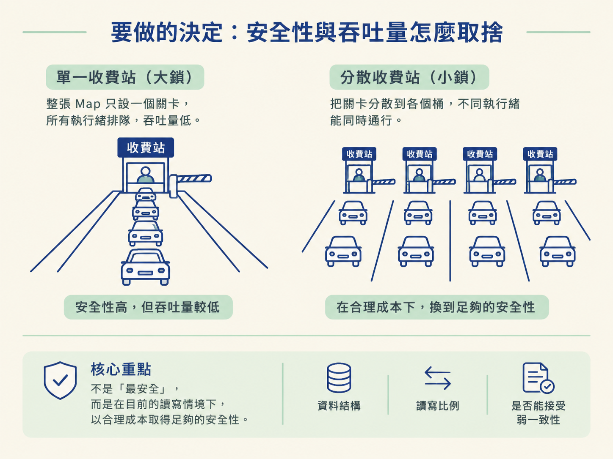
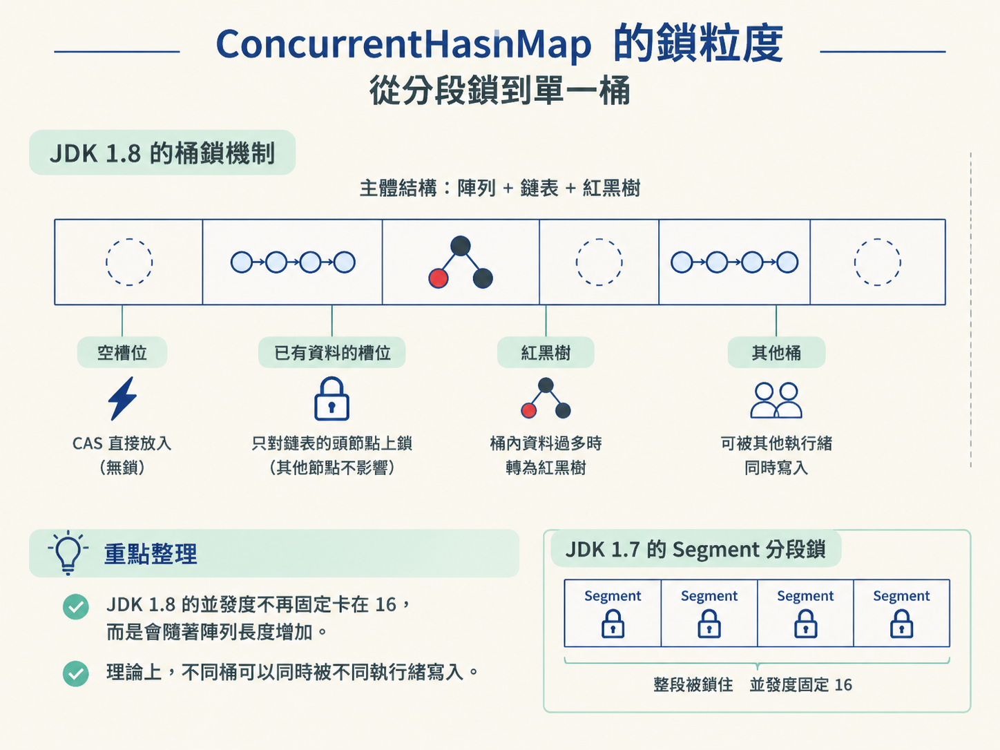
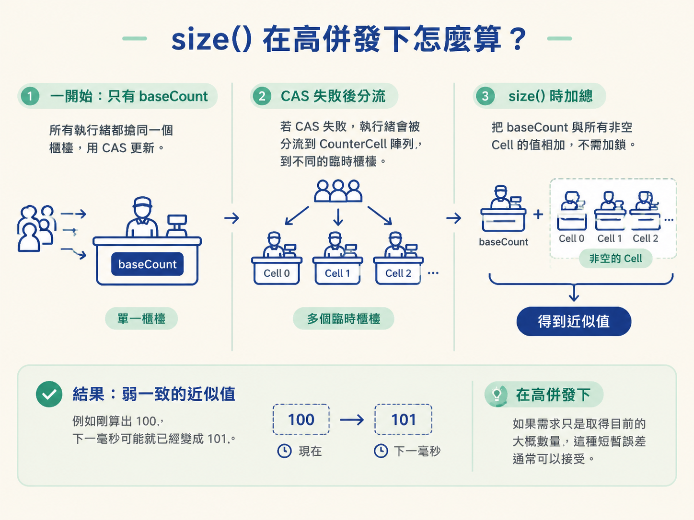
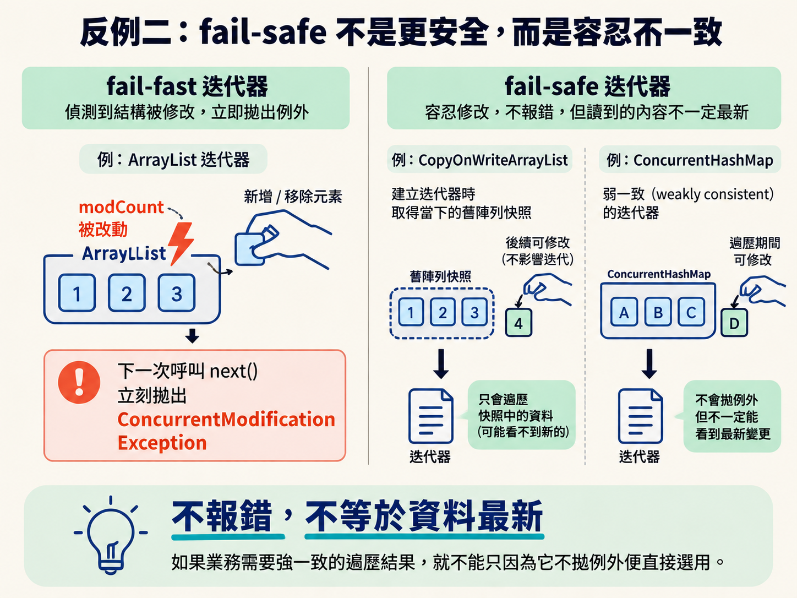

多個執行緒共用同一個 Map 時，選錯容器，問題往往不會每次都出現。它可能只是偶爾覆蓋資料，或在某次遍歷集合時突然拋出 ConcurrentModificationException，讓你很難重現，也很難追查。
上一節提過，HashMap 在併發下可能覆蓋資料；JDK 1.7 甚至可能把鏈表接成環。這時直接換成 Collections.synchronizedMap，或把每個方法都包上一層 synchronized，雖然比較安全，卻也可能讓所有執行緒排隊，吞吐量低到無法接受。
所以選容器的重點，是在目前的讀寫情境下，哪個容器能用合理的成本提供足夠的安全性，而不是「哪個最安全」。接著比較不同容器的取捨，看 ConcurrentHashMap 怎麼縮小鎖粒度、怎麼協助擴容，又為什麼禁止 null；最後釐清 fail-fast 與 fail-safe，避免把「不拋例外」誤認成「資料一定最新」。
併發容器的選擇，像是在決定一條道路要設幾個收費站。整張表只放一把鎖，管理簡單、資料也容易保護，但所有執行緒都得排隊；完全不上鎖，速度可能很快，卻可能讀到錯誤資料或互相覆蓋。
ConcurrentHashMap 的做法，是把鎖的範圍縮小，讓不同位置的操作盡量並行，同時維持基本的執行緒安全。真正要選哪個容器，還是要看資料結構、讀寫比例，以及你能不能接受弱一致性。

| 選項 | 執行緒安全 | 鎖粒度 | 讀取一致性 | 適用場景 |
|---|---|---|---|---|
| HashMap | 不安全 | 無 | — | 單執行緒，或確定不會共用 |
| Collections.synchronizedMap / Hashtable | 安全 | 整張表一把鎖 | 強，但吞吐量差 | 併發很低的場合 |
| ConcurrentHashMap | 安全 | 鎖單個桶的頭節點（1.8） | 弱一致，讀不阻塞 | 高併發讀寫 Map |
| CopyOnWriteArrayList | 安全 | 寫時整表複製並加鎖 | 弱一致，迭代器讀快照 | 讀多寫少的 List |
| ArrayBlockingQueue | 安全 | 單鎖，讀寫互斥 | — | 有界佇列、GC 友善 |
| LinkedBlockingQueue | 安全 | putLock／takeLock 鎖分離 | — | 高吞吐佇列，但要記得設容量 |
JDK 1.7 的 ConcurrentHashMap 使用分段鎖。整個 Map 被切成 16 個 Segment，每個 Segment 是一把 ReentrantLock，裡面再放一個小型的 HashEntry 陣列。
這比整張表只用一把鎖好，但粒度仍然偏粗。只要某個 Segment 被鎖住，裡面幾千個 HashEntry 都會一起被擋住。而且 Segment 數量固定，併發度上限就是 16；初始化完成後，也無法再擴充 Segment。
JDK 1.8 拿掉 Segment，改用和 HashMap 1.8 類似的「陣列＋鏈表＋紅黑樹」結構。查詢時少了一層 hash，也少了一次指標跳轉。鎖的粒度則縮小到單個桶（bucket）。
如果目標槽位是空的，ConcurrentHashMap 會直接用 CAS 嘗試放入資料，連鎖都不需要。如果槽位已經有資料，才對那條鏈表的頭節點使用 synchronized。
這裡沒有使用 ReentrantLock，是因為 JDK 1.6 之後，synchronized 已經經過偏向鎖、輕量級鎖等優化。在低競爭情況下，它的速度足夠，而且不需要額外維護 AQS 佇列，記憶體成本也較低。
因此，JDK 1.8 的併發度不再固定卡在 16，會隨著陣列長度增加。理論上，不同桶可以同時被不同執行緒寫入。

ConcurrentHashMap 1.8 擴容時，不會只讓一個執行緒搬完整張表，而是讓多個執行緒合作完成。
它使用 transferIndex 把整個陣列切成一段一段的工作區，預設步長（stride）是 16。執行緒透過 CAS 領取還沒被處理的區段，接著各自搬運，避免多個執行緒重複處理同一段資料。
那執行緒怎麼知道某個槽位正在擴容？答案是特殊節點 ForwardingNode，簡稱 fwd。某個槽位搬完後，會放入 fwd 節點；它的 hash 值是 MOVED（-1）。
假設執行緒 B 要執行 put，結果發現目標槽位是 fwd，就知道這裡正在擴容，而且資料已經被搬走。它不會阻塞等待，而是呼叫 helpTransfer()，主動領取一段工作來協助搬運。
搬遷演算法和 HashMap 1.8 相同：檢查 hash & oldCap，結果是 0 就留在原本的下標，結果是 1 就移到「原下標 + oldCap」。搬完一段後插入 fwd，其他執行緒便能知道這段已經處理完成。
讀操作如果遇到 fwd，會直接轉往新陣列查找。因此，擴容期間讀寫不必全部停下來。
HashMap 允許 null，ConcurrentHashMap 卻禁止 Key 和 Value 使用 null。關鍵原因是：在多執行緒環境裡，map.get(key) 回傳 null 時，你無法判斷這代表「Key 不存在」，還是「Key 存在，但 Value 就是 null」。
單執行緒時，可以先呼叫 containsKey 確認。不過在多執行緒環境中，get 和 containsKey 之間可能剛好有另一個執行緒刪除或修改資料。這個「先檢查、再動作」的複合操作不是原子的，第二次確認的結果，可能已經不代表第一次讀取的狀態。
與其讓呼叫端面對這種難以解釋的結果，ConcurrentHashMap 乾脆在 API 層面禁止 null，消除這個二義性。
如果只用一個 AtomicLong 計數，幾百個執行緒同時執行 put 時，大家都會搶同一個變數。CAS 可能頻繁失敗，執行緒不斷自旋，CPU 也跟著被浪費。
ConcurrentHashMap 採用類似 LongAdder 的熱點分散策略。內部有一個 baseCount，以及一組 CounterCell 陣列。
併發不高時，執行緒直接用 CAS 更新 baseCount。如果 CAS 失敗，就不再一直搶同一個位置，而是依照探針雜湊值映射到某個 Cell，改更新那個 Cell。
這就像超市原本只有一個結帳櫃檯，人一多便開出多個臨時櫃檯分流。執行 size() 時，再把 baseCount 和所有非空 Cell 的值加總，不需要加鎖。
代價是，這只能提供弱一致的近似值。例如剛算出 100，下一毫秒可能就已經變成 101。不過在高併發環境下，如果需求只是取得目前的大概數量，這種短暫誤差通常可以接受。

Integer.MAX_VALUE，忘記設定容量，可能造成 OOM。fail-fast 是 java.util 普通集合，例如 ArrayList、HashMap、HashSet 的預設行為。
它靠 modCount 運作。迭代器建立時，會把當下的 modCount 記錄為 expectedModCount。每次呼叫 next()，迭代器都會檢查兩者是否相等。只要發現集合曾經被結構性修改，就立即丟出 ConcurrentModificationException。
不過，fail-fast 是防禦式設計，不保證 100% 抓到所有併發修改，它只是盡量提早提醒你集合狀態可能有問題。
因此，在外層包上 synchronized，並不代表 fail-fast 一定不會發生。只要修改發生在迭代器預期之外，仍然可能拋出例外。
fail-safe 常用來描述 JUC 併發容器，例如 CopyOnWriteArrayList 和 ConcurrentHashMap 的迭代機制。它們的迭代器不會因為集合被修改就拋出例外，但代價是迭代器可能讀到舊資料。
CopyOnWriteArrayList 採用寫時複製。迭代器建立的那一刻，就握住當時的舊陣列快照，因此遍歷期間不會受到後續修改干擾。
ConcurrentHashMap 的迭代器則是弱一致的。遍歷期間可以修改集合，但不保證一定看得到最新變更。
所以 fail-safe 換來的是「不因修改而報錯」，不是「讀到的資料一定最新」。如果業務需要強一致的遍歷結果，就不能只因為它不拋例外便直接選用。

ConcurrentHashMap 能保證單一操作的原子性，例如 putIfAbsent 和 computeIfAbsent。但如果把「先 get、再 put」拆成兩步，這個複合操作仍然不是原子的，中間可能被其他執行緒插入。
需要原子地完成檢查與寫入時，應該使用 compute 系列方法，或使用 putIfAbsent 這類容器已經提供的原子操作，不要自行拆成兩個步驟。
| 你的情況 | 選誰／怎麼做 |
|---|---|
| 單執行緒使用 Map | HashMap |
| 多執行緒讀寫 Map | ConcurrentHashMap |
| 需要「檢查後再寫入」的原子複合操作 | 使用 compute／putIfAbsent，不要拆成兩步 |
| 併發 List，而且讀遠多於寫 | CopyOnWriteArrayList |
| 遍歷時可能被修改，且不能接受例外 | 使用 fail-safe 容器，並接受可能讀到舊值 |
| 阻塞佇列，而且記憶體敏感 | ArrayBlockingQueue（有界、GC 友善） |
| 阻塞佇列，而且追求吞吐量 | LinkedBlockingQueue，但務必指定容量 |
可以把選型順序記成三個問題：
併發容器是在一致性與吞吐量之間取捨。ConcurrentHashMap 從 JDK 1.7 的 Segment 分段鎖演進到 JDK 1.8 的 CAS 加上 synchronized 鎖頭節點，把鎖粒度從 Segment 縮小到單一桶；它也透過 transferIndex 分配擴容工作，並利用 ForwardingNode 讓多個執行緒協助搬遷，讓擴容期間的讀寫不必全部停下來。它禁止 null，是為了消除 get 回傳 null 時的二義性；size() 則透過 baseCount 與 CounterCell 分散更新熱點，因此只能提供弱一致的近似值。fail-fast 用 modCount 盡早拋出 ConcurrentModificationException，但不保證抓到所有問題；fail-safe 則透過快照或弱一致迭代避免例外，代價是可能讀到舊資料。實際選擇時，先看併發程度，再看讀寫比例，最後確認複合操作是否能由容器原子地支援。
到這裡，「Java 語言與物件」這個節點就完整了：從一行程式傳遞了什麼、物件如何比較與建立，到執行時如何觀察，再一路走到集合選型與併發容器。之後閱讀 Spring、MyBatis 或 JUC 時，許多看似神奇的框架行為，拆開來都能回到這些底層機制。